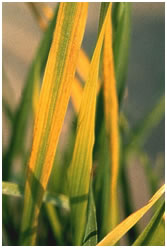
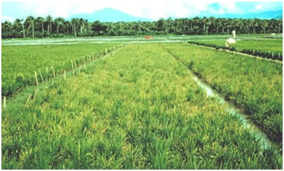

RICE :: VIRAL DISEASES :: RICE TUNGRO DISEASE
Rice Tungro Disease (RTD) - Rice tungro bacilliform virus(RTBV)andRice tungro spherical virus(RTSV)
Symptoms
Infection occurs both in the nursery and main field. Plants are markedly stunted. Leaves show yellow to orange discoloration and interveinal chlorosis. Young leaves are sometimes mottled while rusty spots appear on older leaves. Tillering is reduced with poor root system. Panicles not formed in very early infection, if formed, remain small with few, deformed and chaffy grains.
|  |  |
Pathogen
Two morphologically unrelated viruses present in phloem cells. Rice tungro bacilliform virus (RTBV) bacilliform capsid, circular ds DNA genome and Rice tungro spherical virus (RTSV) isometric capsid ss RNA genome.
Disease Cycle
Transmission mainly by the leaf hopper vector Nephotettix virescens Males, females and nymphs of the insect can transmit the disease. Both the particles are transmitted semi-persistently, in the vector the particles are noncirculative and nonpropagative. Plants infected with RTSV alone may be symptomless or exhibit only mild stunting. RTBV enhances the symptoms caused by RTSV. RTSV can be acquired from the infected plant independently of RTBV, but acquisition of RTBV is dependent on RTSV which acts as a helper virus. Both the viruses thrive in rice and several weed hosts which serve as source of inoculum for the next. Ratoon from infected rice stubble serve as reservoirs of the virus. Disease incidence depends on rice cultivars, time of planting, time of infection and presence of vectors and favorable weather conditions
Management
- Field sanitation, removal of weed hosts of the virus and vectors.
- Grow disease tolerant cultivars like Pankhari203, BM66, BM68, Latisail, Ambemohar102, Kamod253, IR50 and Co45.
- Control the vectors in the nursery by application of Carbofuran 170 g/cent 10 days after sowing to control hoppers.
- Spray Phosphomidan 500 ml or Monocrotophos 1lit/ha (2 ml/litre) or Neem oil 3% or NSKE 5% to control the vector in the main field 15 and 30 days after transplanting.
- Set up light traps to monitor the vector population.